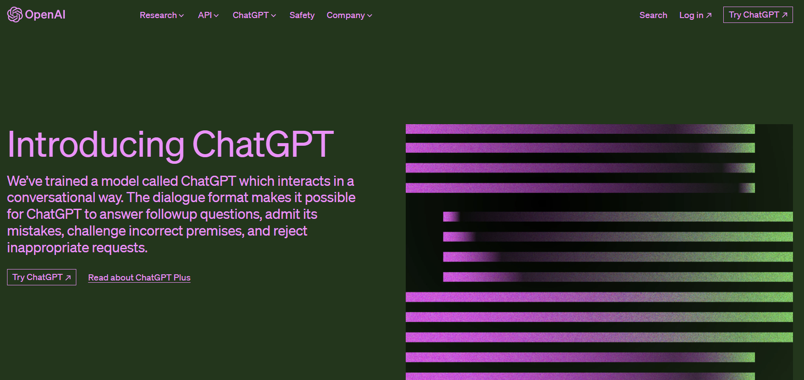
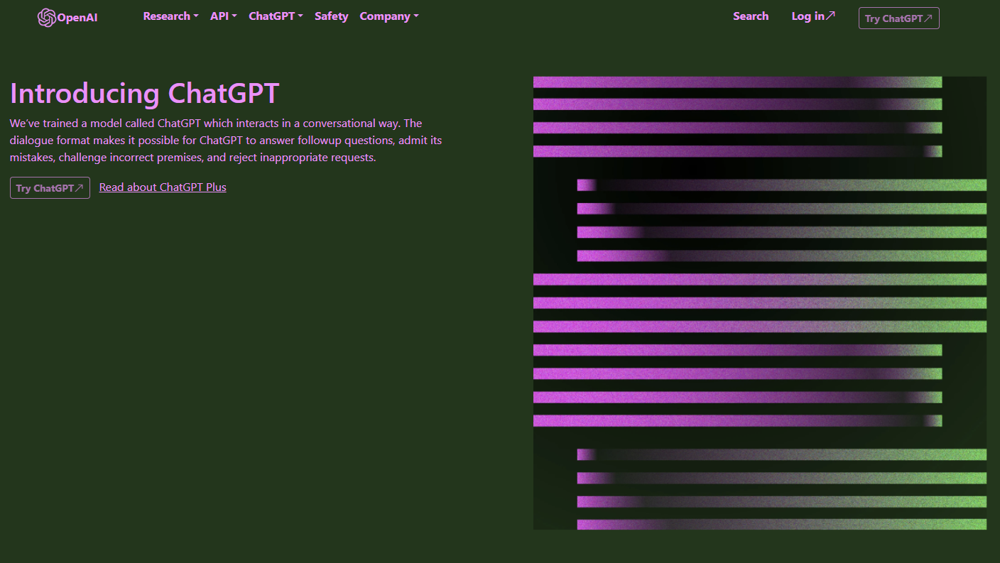

When I first discovered Bootstrap 5, with its reputation for simplifying web development, I was genuinely enthusiastic. The idea of effortlessly learning it and swiftly creating websites sounded appealing. Yet, my experience was somewhat different. Contrary to my initial expectations, mastering Bootstrap 5 proved to be challenging. This, I suspect, stems largely from my unfamiliarity with frameworks and my ongoing journey with HTML and CSS. However, I remain optimistic. Given time, I’m confident in harnessing the power of Bootstrap 5’s extensive pre-configured classes and functionalities to craft websites more swiftly and efficiently.
Having pre-configured classes significantly accelerates website development and instills a structured approach to site creation. Consider the ‘navbar’ class as an example. This class, essential for creating a website’s navigation bar, is ubiquitous in modern web design. With the Bootstrap framework, the process of crafting a navbar becomes immensely simplified, thanks to this dedicated class. Additionally, Bootstrap alleviates the often tedious task of content alignment, be it text or images. Functions for aligning to the left, right, or center are made straightforward, streamlining the design process further.
However, there are drawbacks, such as not having total control over the envisioned design or functionality of a site. A mere misplacement of a class can disrupt the visual harmony of an element in relation to the entire website. Troubleshooting issues like misaligned text or images can become tedious, requiring a thorough combing of the code to pinpoint the problem. Yet, despite these challenges, I’d still lean towards using Bootstrap 5. Its efficiency in expediting website creation is a compelling advantage for me
Below is what the original ChatGPT website looks like. 
And Here is my recreation of the website using Bootstrap 5. 
It’s evident from my recreation that I struggled with adjusting the margins and padding, and the font size wasn’t quite right. Yet, this effort was undertaken with minimal prior experience with Bootstrap 5. I’m confident that with further practice, I’ll be able to craft websites that closely mirror their original counterparts.